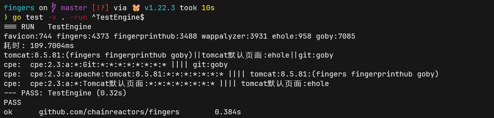
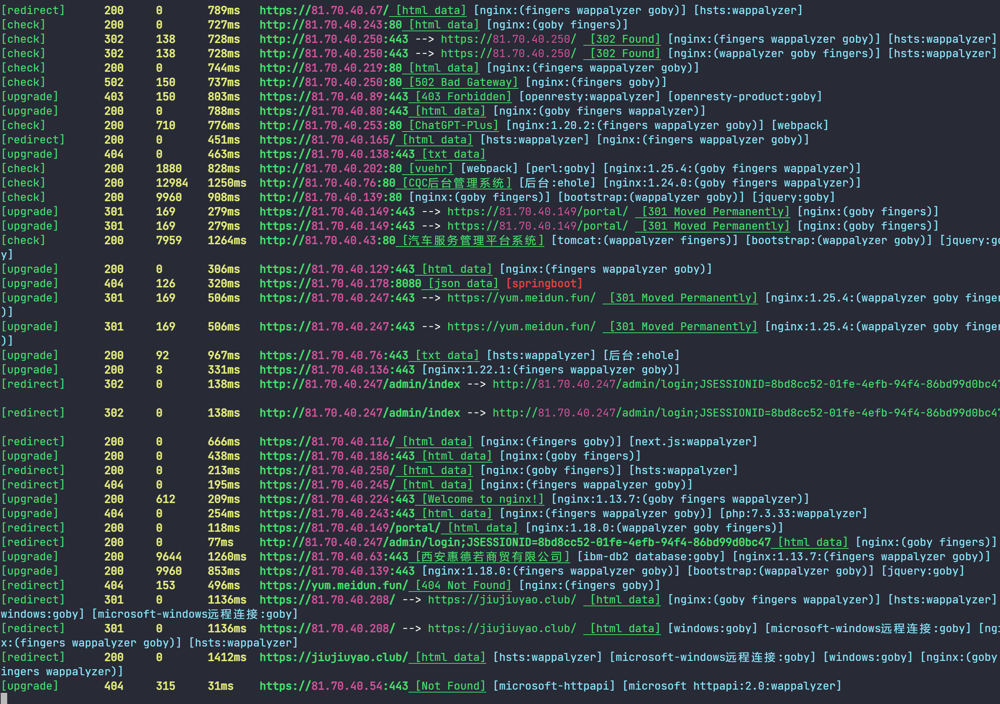

指纹的终极解决方案
Intro¶
指纹库当前较为热门的领域之一, 因为每个ASM(攻击面管理)都需要一个强大的指纹库, 而各家大厂都在做自己的ASM.. 指纹库与漏洞库作为安全知识库的两个重要组成部分, 也是各家基建必定会关注的领域.
对于这个问题, 大多数厂商选择堆人力解决, 招几个运营, 给他们定上几个月几百条指纹的KPI, 一两年时间就能把市面上的大多数产品囊括, 看起来似乎对大厂来说也不是个难以解决的问题. 但事实真的如此么?
背景¶
在发布gogo时, 曾经专门介绍过gogo的指纹引擎 . 两年过去了gogo内嵌的指纹引擎已经经过好几次重构, 添加了大量新特性, 并且从gogo中独立出来，成为一个基础库提供给多个工具使用, 也是本文现在介绍的内容。
nmap¶
开源世界最知名的指纹识别工具与指纹库毫无疑问是nmap
nmap有着全面而强大的规则库:
- service-probes 主要的识别规则与主动探针
- services 默认端口与服务的映射表
- nse仓库 nmap插件仓库, 包含了大量协议的实现
- ...nmap自身还有不少规则文件, 那些与我们的场景相距较远 暂时忽略
但为什么越来越少人使用nmap作为首选的指纹识别工具, 现在还在坚持使用的人也大多将它当作端口探测工具.
原因也非常简单, nmap默认配置下能识别的服务不多, 开启全规则的探测又太慢, 最关键的还有缺少大量web服务的指纹识别. 特别是非通用组件的供应链系统的识别.
web指纹¶
nmap有这样的缺陷, 自然就会出现解决的方案. 最知名的解决方案肯定是wappalyzer. 这个规则库有一个比较全的覆盖面(约4000个app), 并支持版本的匹配, 以及各种tag对指纹进行分类.
除此之外, 还有一些较为知名的项目:
- WhatWeb , 大约1800+指纹, 主要是通用组件的指纹
- ehole 大约900+指纹, 主要有不少国内的供应链产品
- fingerprinthub 大约3500条指纹, 覆盖国内外常见应用; 通过github action 自动提交给nuclei规则库, 也是nuclei目前的主要指纹识别手段之一; 采用yaml独立管理, 自动生成统一的json格式. 是工程化做的最好的指纹项目
- tidefinger 约1800条指纹, 指纹来自WhatWeb、Wappalyzer、fofa
- kscan 粗略统计约14000+, 整理自多个指纹库
- gogo 约4500条, 我编写的指纹仓库与指纹引擎.
- 闭源指纹库 从各种商业工具中逆向提取的, 如goby(约7000), cube, tanggo, xray等等
上面这些指纹库加起来, 应该能覆盖绝大多数的产品与应用.
我自己也尝试做过指纹库, 深知其中的麻烦程度. 几乎每个指纹库开始都会从其他指纹库导入, 然后通过各种数据处理操作, 将不同规则的指纹库统一到自己的规则下. 然后进行极其繁琐的测试, 筛选, 过滤. 因此, 我自己写的指纹库在运行一段时间后, 实在无力维护, 更新频率下降了很多.
从数量上看, 去掉上面这些指纹库的各种交叉引用, 总的指纹数大约在10000条左右, 基本能够覆盖绝大多数产品.
困难¶
指纹库差异¶
从上面的各个指纹库差异就可以看的出来整理规则的困难程度, 而更大的麻烦在于, 通过复杂的手段处理后的规则确实能在各个开发者自己的工具上跑起来, 但指纹引擎的差异会让不同规则库的指纹效力有巨大的差别.
我尝试从其他指纹库移植指纹时, 编写数据转换的脚本只需要几个小时, 但筛选掉无效数据需要花费几周甚至几个月的时间.
指纹库差异除了在识别能力上的不同之外, 还有更多的细节.
例如:
-
有些指纹库不支持版本识别, 他们只识别产品名.
-
有些指纹库无法识别服务指纹, 只能识别web指纹.
-
有些指纹库无法识别需要主动发包的指纹
- 有些指纹库采用了dsl进行规则编写, 无法直接转为同一格式
- 有些指纹库支持的favicon是md5, 有些是mmh3
- ......
这些问题决定了不同的指纹库直接是无法无损转换的, 数据格式转过去了, 不代表能力转过去了.
从指纹识别转化为漏洞¶
而这也只是指纹识别这个场景中的一个小麻烦.更大的麻烦在于如何从指纹变成漏洞,或者说是攻击面.
早期很多工具会将内置的poc与exp一股脑的打出去. 他们只需要考虑误报与漏报, 不需要考虑opsec, 也不需要考虑其他风险. 这确实是个很有效的解决办法. 但到了2024年, 基础的安全设备已经普及了. 把全部poc打出去不会收获漏洞, 只会一无所有.
指纹库项目的出现实际上也是为了解决这类场景的, 时间点上几乎与基础安全设备的普及符合.
现在高效率的漏洞探测, 需要先识别指纹, 再从poc库中挑选合适的poc测试, 这样才能最高效率最高准确度的收获漏洞, 最不济也能收获一个潜在的攻击面.
从指纹转到poc, 最直接的理解识别到指纹以及版本, 然后根据版本号挑poc.
但真有这么简单么? 首先的问题就是, 大量供应链产品, 他们的漏洞并无统一的漏洞编号. 就算有统一的漏洞编号, 在CVE或CNVD的title上也有好几个不同的表示, 其次指纹库之间同一个产品的名字也不相同. 无法之间通过指纹名字定位到通用的漏洞库上. 特别是在英语世界, 这个差异还小一些, 非英语世界的指纹名字五花八门.
这个问题的解还是在nmap上, 与五花八门的指纹库不同的是, nmap提供了一个相对标准化的指纹识别的解决方案---CPE (Common Platform Enumeration). nmap给能识别到的每个指纹都添加了CPE, 而CVE指纹库也提供了每个产品的CPE名. 就算title不同, 我们也可以将其通过标准化命名进行梳理.
简单介绍CPE
* part: 表示 CPE 项目的类别。值包括应用程序 (a)、操作系统 (o) 和硬件 (h)。
* vendor: 产品的供应商或制造商。例如：`microsoft`, `apple`, `google`。
* product: 产品的名称。例如：`windows_10`, `macos`, `chrome`。
* version: 产品的版本号。例如：`10`, `11.0`, `88.0.4324`。
* update: 产品的更新或修订版本。例如：`sp1`（Service Pack 1）。
* edition: 产品的发行类型。例如：`enterprise`, `home`, `professional`。
* language: 产品的语言版本。例如：`en`（English）, `fr`（French）, `de`（German`）。
* sw_edition: 特定的软件版本。例如：`demo`, `beta`。
* target_software: 产品所运行的目标软件平台。例如：`android`, `ios`。
* target_hardware: 产品所运行的目标硬件平台。例如：`x86`, `arm`。
* other: 其他可能的分类或标识信息。
Formatted String：标准格式cpe:2.3:a:microsoft:windows_10:1909:*:*:*:*:*:*:*
WFN：用于需要详细描述和精确匹配的平台场景，适合内部使用和存储。wfn:[part="a", vendor="microsoft", product="windows_10", version="1909"]
URI：适用于 Web 应用和资源标识，便于嵌入和传输。cpe:/a:microsoft:windows_10:1909
大多数漏洞库使用Formatted String表示CPE.
但这也还是解决了英语世界的产品命名, 非英语世界还是没有一个统一的CPE命名规范, 如果产品的厂商不主动对接漏洞平台, 一个产品出现多个CPE名字也是家常便饭. 但好在通过CPE的搜索可以指通过product或者只通过vendor进行, 并不需要完全匹配一致， 可以做一写相对来说比较通用的转换, 例如统一转小写, -转_, 忽略空格等字符串处理, 尽量解决指纹的别名问题.
指纹识别的终极解决方案¶
面对上面这些问题, 最直观的解决方案找运营来写规则. 但开源世界有开源世界的玩法.
在深入调研了指纹引擎的开源世界实现, 以及多年一直在维护的fingers指纹库, 想到了一个绝妙的点子.
不做规则库移植了, 直接实现规则库本体, 然后转换为同一格式不就好了.
我觉得我找到了指纹识别的终极解决方案, 并实现了它!
https://github.com/chainreactors/fingers
多指纹引擎¶
目前开源世界的指纹库的规则都还不是很复杂, 只需要少则几十行多则几百行代码就能100%实现原有指纹库的引擎.
指纹库规则转换是有损的, 但是直接实现指纹引擎, 不仅在能力上无损, 还是顺手给它做一些性能优化.
当前支持的第三方指纹引擎已经有:
- ehole
- fingerprinthub
- wappalyzer
- goby
当然不止于此, 一些暂时未被公开商业工具的指纹库. 因为可能涉及到的风险, 未公开商业工具的相关实现不会开源, 目前以内部的morefingers仓库, 通过动态注册引擎到fingers中, 有授权的用户现在已可以使用.
统一输出格式¶
实现了指纹引擎, 只需要复用fingers原本指纹输出结构, 并对指纹来源做一定的标记.
当然没这么简单, 这里就遇到了问题, 不同指纹库对同一个指纹不一定是相同名字, 在fingers中叫做用友nc, 在其他指纹库中就叫做yonyou nc.
要解决这个问题, 首先要实现刚刚提到的字符串模糊匹配的处理操作
- 中文转拼音
- 大写转小写
- 忽略
_,-,[blank]
但这也只能解决一部分问题, 剩下就需要手动配置不同指纹库中的别名了.
为此, fingers中提供了aliases.yaml ,用来统一不同指纹库中的各种别名. 好在现在有GPT4, 能上传指纹库的json文件, 实现比较基础的指纹别名转换, 并补充product与vendor字段.

SDK¶
fingers 将以一个库的方式发布, 几行代码就能赋予你的工具目前最强大的指纹识别能力. 只需要几行代码， 将能赋予工具指纹识别能力.
func TestNewEngine(t *testing.T) {
engine, err := NewEngine()
if err != nil {
panic(err)
}
resp, err := http.Get("https://baidu.com")
if err != nil {
return
}
frames, err := engine.DetectResponse(resp)
if err != nil {
return
}
fmt.Println(frames)
}
spray v1.0.0 (已发布prerelease)是第一个完全适配fingers库能力的工具. 可以在spray中体验本文中的各种特性.

SDK 详细文档请见 https://chainreactors.github.io/wiki/libs/fingers
TODO¶
支持更多引擎¶
最终目标是实现指纹识别的**allinone**
- fingerprinthubv4
- nmap
- kscan
- tidefinger (整合了whatapp)
对接漏洞库¶
对接漏洞库将暂时通过cvemap来实现. 因为nuclei是目前最丰富的poc仓库, cvemap已经实现了从product或者cveid到poc templates的对接. 我们只需要输出product的名字或者cpe, 就能使用cvemap从nuclei-templates中寻找合适的template.
后续将会提供相关的API.
后话¶
fingers 已经从一个gogo的单文件发展囊括多个指纹库/指纹引擎, 有各种用法的独立仓库. 作为在接下来的攻防对抗中的一份礼物, 从开源世界中来, 还给开源世界.